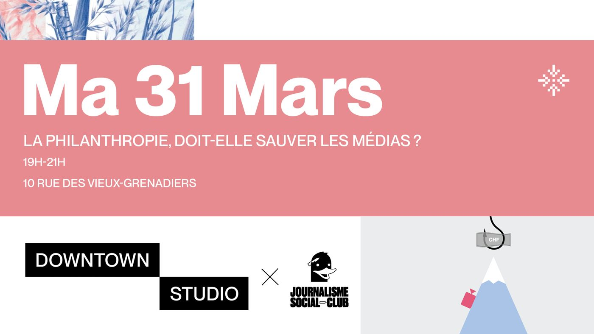

Rencontrer / Journalisme Social Club
Les fondations, dernier espoir du journalisme ?
Mardi 31 mars 2026Journalisme Social Club

Alors que le modèle économique du journalisme s'effondre, de plus en plus de regards se tournent vers l'argent philanthropique. Les fondations sont-elles un dernier espoir pour le secteur, ou un levier d'influence pour leurs propriétaires ?
Avec
- Yves Daccord, président de la fondation La Tour en communs
- Antonio Hodgers, ancien conseiller d'État genevois
- Gilles Marchand, Initiative Média et Philanthropie de l'Université de Genève
- Riccardo Ramacci, Fondation Mercator